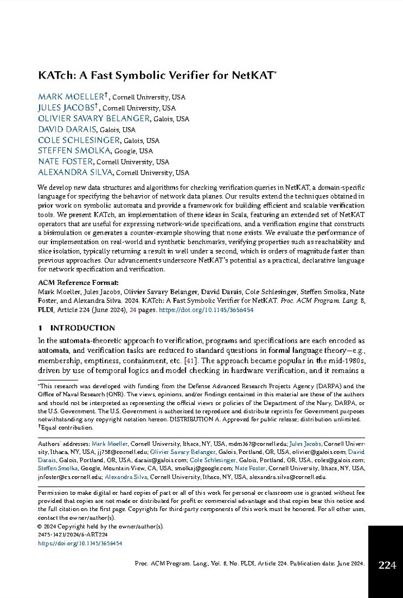

NetKAT is a language for specifying the behavior of network data planes. This paper develops data structures and algorithms for checking NetKAT verification queries, implemented in KATch, which constructs a bisimulation or a counterexample. On real-world and synthetic benchmarks it typically answers in well under a second, orders of magnitude faster than previous approaches.

Read the paperWe develop new data structures and algorithms for checking verification queries in NetKAT, a domain-specific language for specifying the behavior of network data planes. Our results extend the techniques obtained in prior work on symbolic automata and provide a framework for building efficient and scalable verification tools. We present KATch, an implementation of these ideas in Scala, featuring an extended set of NetKAT operators that are useful for expressing network-wide specifications, and a verification engine that constructs a bisimulation or generates a counter-example showing that none exists. We evaluate the performance of our implementation on real-world and synthetic benchmarks, verifying properties such as reachability and slice isolation, typically returning a result in well under a second, which is orders of magnitude faster than previous approaches. Our advancements underscore NetKAT’s potential as a practical, declarative language for network specification and verification.
@article{moeller2024katch,
title = {KATch: A Fast Symbolic Verifier for NetKAT},
volume = {8},
ISSN = {2475-1421},
url = {https://doi.org/10.1145/3656454},
DOI = {10.1145/3656454},
number = {PLDI},
journal = {Proceedings of the ACM on Programming Languages},
publisher = {Association for Computing Machinery (ACM)},
author = {Moeller, Mark and Jacobs, Jules and Belanger, Olivier Savary and Darais, David and Schlesinger, Cole and Smolka, Steffen and Foster, Nate and Silva, Alexandra},
year = {2024},
month = June,
pages = {1905--1928}
}